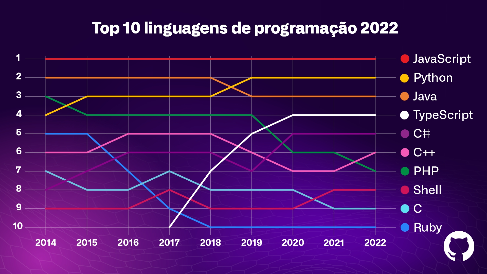

O QUE É O PHP - Hypertext Preprocessor
PHP é um acrônimo recursivo para PHP: Hypertext Preprocessor (Pré-Processador de Hipertexto), que originalmente se chamava Personal Home Page (Página Inicial Pessoal). Ele também é um subconjunto de linguagens de scripts como JavaScript e Python. A diferença é que PHP costuma ser mais usado para comunicação do lado do servidor (back-end). Enquanto isso, JavaScript pode ser usado tanto para o front-end quanto para o back-end – e Python é apenas para o lado do servidor (back-end). Parece confuso? É por isso que precisamos primeiramente entender sobre linguagens de script antes de mergulhar de maneira profunda no PHP. Uma linguagem de script serve para automatizar a execução de tarefas num ambiente de tempo de execução especial. Isso inclui dizer para uma página estática (construída com HTML e CSS) para executar ações específicas com regras que você definiu anteriormente. Por exemplo, você pode usar um script para validar uma forma de garantir que todos os campos de um formulário foram preenchidos antes que eles sejam enviados de volta para o servidor. O script, então, iria rodar e checar todos os campos quando um usuário enviar o formulário. Se um deles estiver vazio, um texto de alerta seria exibido para informar o usuário disso. Outros usos comuns de linguagens de script incluem mostrar um efeito de menu drop-down quando o cursor do mouse é passado sobre o menu principal, exibir botões de rolagem e animações, abrir caixas de diálogo, e assim em diante.
PORQUE É IMPORTANTE SABER PROGRAMAR NO PHP
O importante é saber que essa linguagem de programação é indispensável quando falamos do momento atual, totalmente voltado para as aplicações web. Em meio a isso, além de ser uma linguagem voltada para o segmento, PHP é de fácil aprendizado e tem uma série de outras vantagens que fazem diferença!

COMO INSTALAR E CONFIGURAR O PHP
1º PASSO
Baixe o PHP no site oficial BAIXE AQUI
2ª PASSO
Escolhe a opção Windows downloads
3º PASSO
Baixe a versão mais recente 8.3 (8.3.6), Mas se preferir escolha outra versão.
Escolha a opção de dawnload ZIP
4º PASSO
Após o download, descompacte o arquivo .zip na partição principal do seu computador (normalmente C:)
e renomeie a pasta para simplesmente php.
Renomeia a pasta para php
PRONTINHO✅